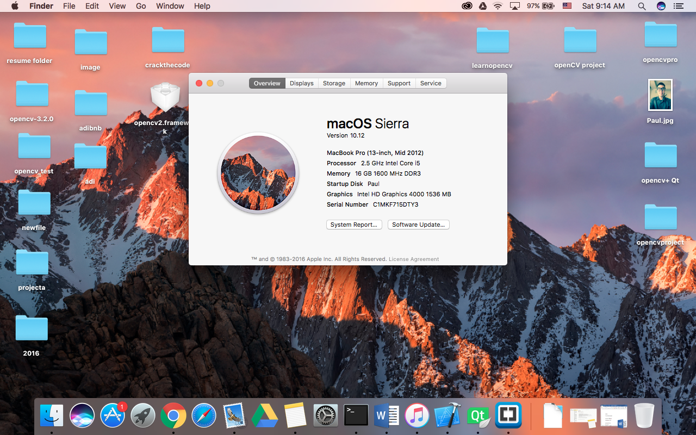
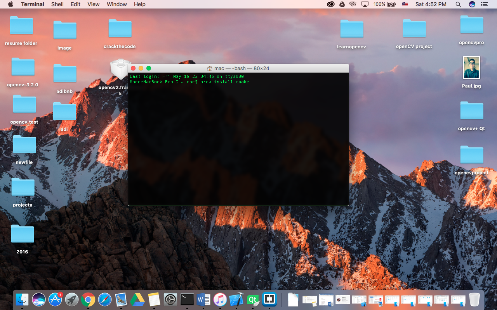
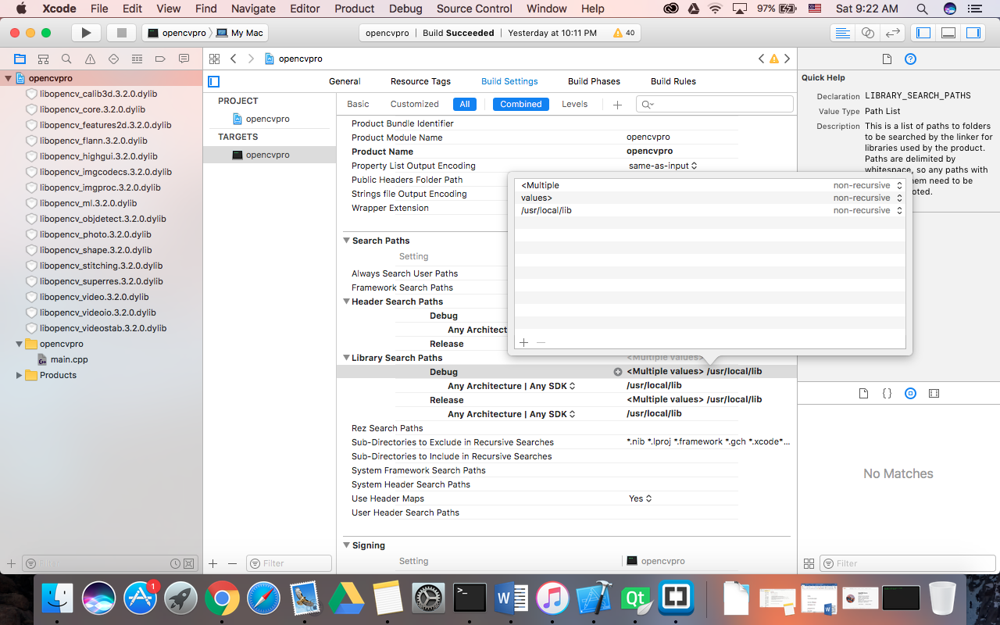
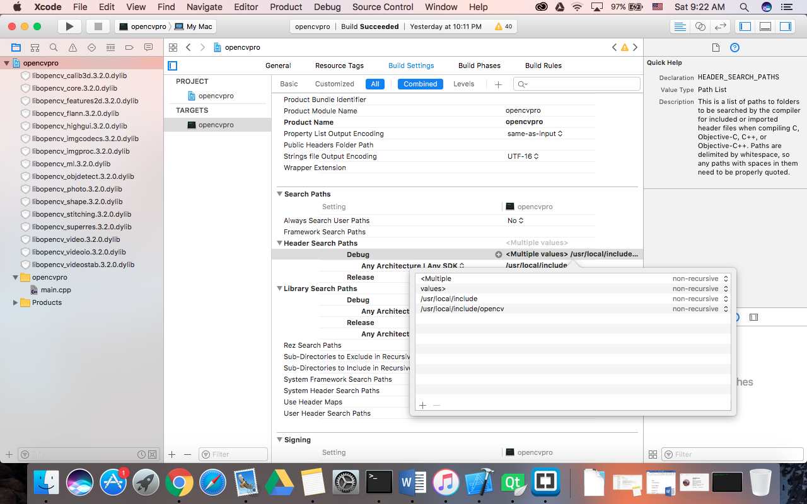
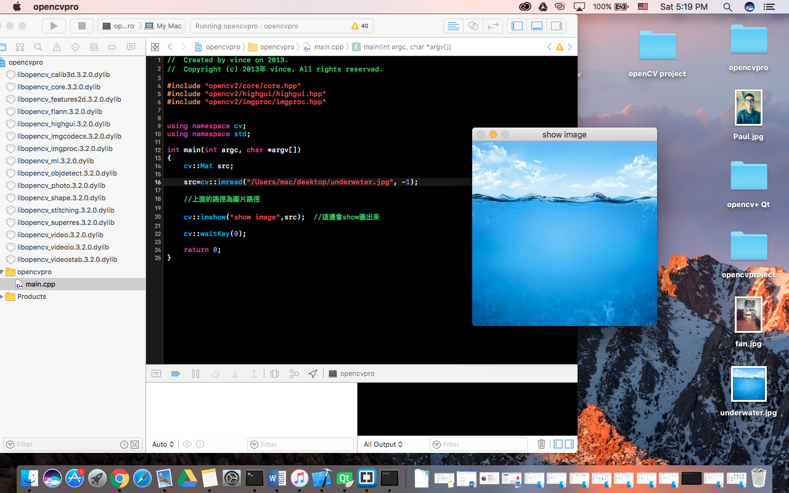

The first try to use opencv to build project in xcode.

ruby -e "$(curl -fsSL https://raw.github.com/Homebrew/homebrew/ go/install)"
brew install cmake
mkdir release
cd release
cmake -G "Unix Makefiles" ..
make
/usr/local/lib

/usr/local/include /usr/local/include/opencv

// Created by vince on 2013. // Copyright (c) 2013年 vince. All rights reserved. #include "opencv2/core/core.hpp" #include "opencv2/highgui/highgui.hpp" #include "opencv2/imgproc/imgproc.hpp" using namespace cv; using namespace std; int main(int argc, char *argv[]) { cv::Mat src; src=cv::imread("/Users/mac/Documents/MyCode/biglena.bmp", -1); //上面的路徑為圖片路徑 cv::imshow("show image",src); //這邊會show圖出來 cv::waitKey(0); return 0; }

Paul is an Engineering student study in Robotic Engineering in Tamkang University in 2015. His research area is in Robotic Vision and Control. He was accepted by Master Science Computer Science program in Illinois Institute of Technology at Fall 2018. His goal is to become a software engineer working on the area of robotic vision.